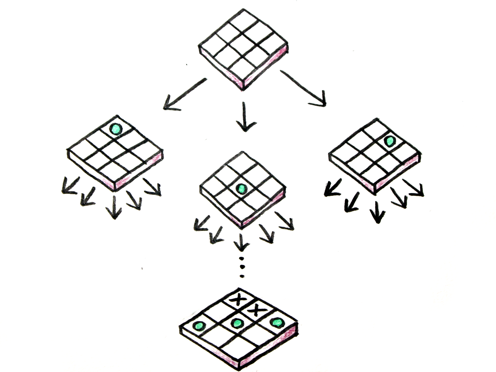
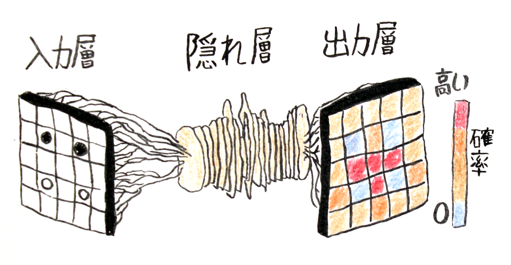
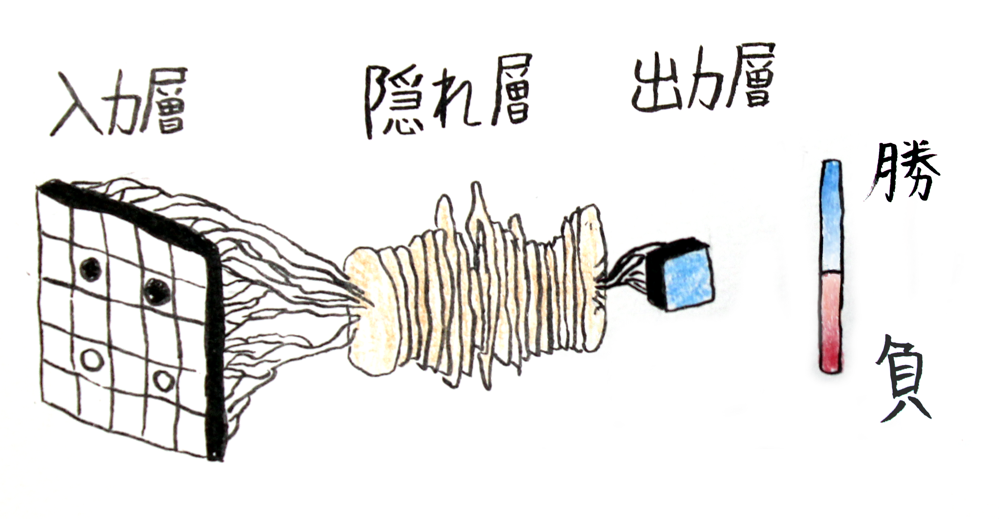
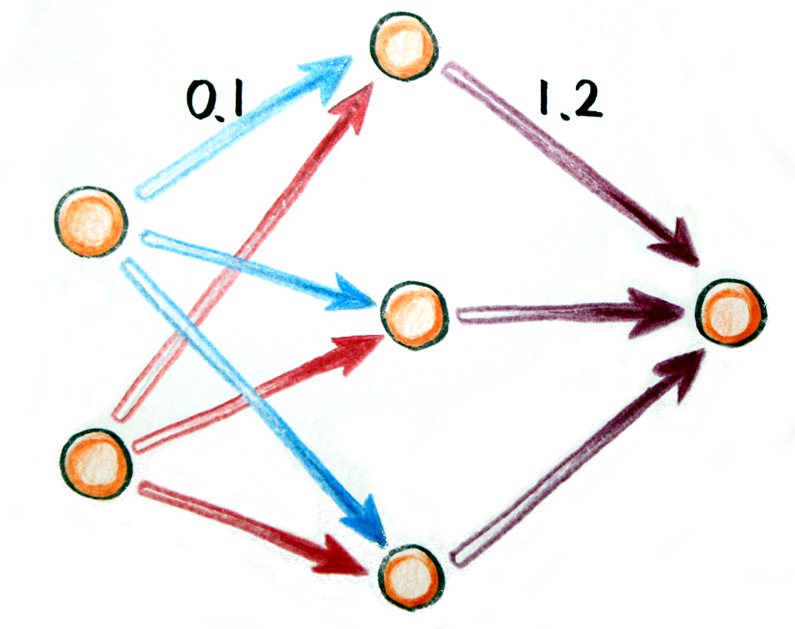

DAAD Tomonokai, 2016年03月19日
ミクラシュ・ヨハネス, johannes_mikulasch@yahoo.co.jp2016年3月9日ー15日の勝負
試合結果: 4-1
○×ゲームのゲームの樹形図の例
人工知能はこの樹形図でいい道を探す
囲碁:
(チェス: $\bar{w}=35$, $\bar{d}=80$)
そんな大きな樹形図の計算には
「モンテカルロ木探索」が使われる
AlphaGoはニューラルネットワークが二つあり、脳みそのような計算ができる。
それで、モンテカルロ木探索でいい結果に必要な道を減らすことができる。
ゲームの状態から、次にコマが置かれる確率が高い場所を計算する。
このネットワークはオープンソースの囲碁のソフト「Pachi」に８５％の確率で勝つことができる。とても強い方法です。
ゲームの状態から、今どちらが勝っているか負けているかを計算する。
そうすることによって、樹形図を最後まで計算する必要がなくなる。
この人工の脳みそは、本物の脳みそのようにニューロンというユニットから作られている。
ニューロンごとに重さ（数字の大きさ）があり、計算に影響する。
この重さはネットワークのトレーニングの段階で定義される。
AlphaGoはゲームを”学ぶ”、そして経験をつんで強くなる、だからプロに勝てる。
コメンテーターはAlphaGoは人間みたいに遊んでいると言った。
強いAIが囲碁のプロに勝った。
人工知能は囲碁で人間を越えたと思う。
AlphaGoは48のCPU（コンピュータ）、8のGPU（グラフィック）を使っている。 もっとすごいバージョンもある(1202 CPU、176 GPU)。